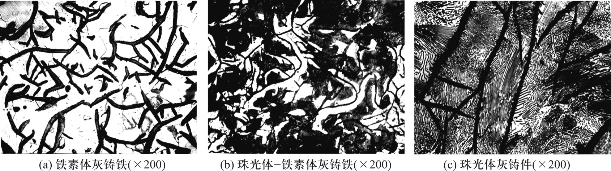
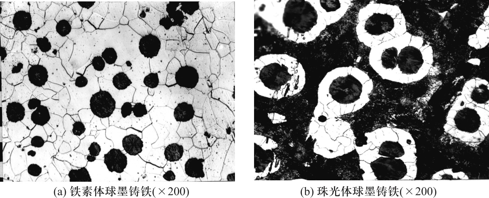
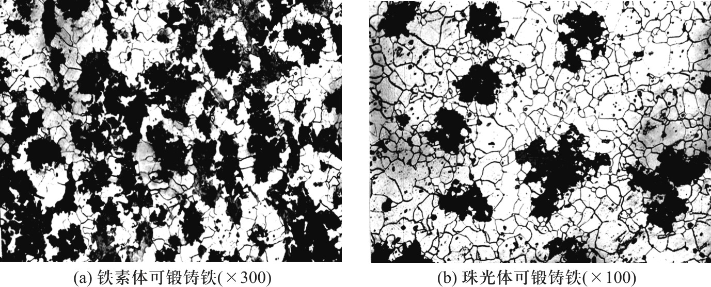
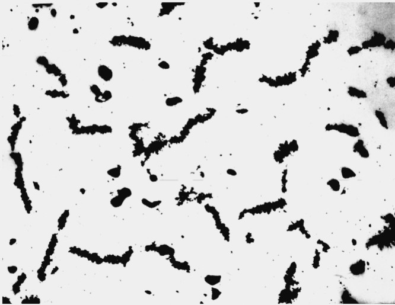

工程材料与机械制造基础（第3版）
Classification of Carbon Steel
01/碳钢的分类
钢按化学成分分为碳素钢（碳钢）和合金钢两大类。碳钢冶炼简便、价格低廉。
铸铁含碳2.5%~4.0%，铸造性能好、耐磨、减振。
01/碳钢的分类
按冶炼炉：平炉钢、转炉钢、电炉钢
按脱氧方法：沸腾钢（F）、镇静钢（Z）、特殊镇静钢（TZ）
01/碳钢的分类
低碳钢：C < 0.25% — 塑性好、易焊接
中碳钢：C = 0.25%~0.60% — 综合力学性能好
高碳钢：C > 0.60% — 硬度高、耐磨
01/碳钢的分类
普通钢：S≤0.050%，P≤0.045%
优质钢：S≤0.035%，P≤0.035%
高级优质钢：S≤0.020%，P≤0.030%
特级优质钢：S≤0.015%，P≤0.025%
01/碳钢的分类
碳素结构钢：建筑结构用钢（低碳、焊接好）+ 机械结构用钢（C<0.60%，需热处理）
碳素工具钢：含碳量高，热处理后强度、硬度、耐磨性高
Steel Designation
02/牌号
牌号组成：Q + 屈服强度 + 质量等级 + 脱氧方法
Q235AF → Q=屈服强度，235MPa，A级，F=沸腾钢
02/牌号
两位数字表示平均碳质量分数的百分数
45 钢 → 含碳0.45%
08 钢 → 含碳0.08%（冲压件）
65 钢 → 含碳0.65%（弹簧）
02/牌号
T + 数字（平均碳质量分数的千分数）
T10 → 含碳1.0%
T10A → A表示高级优质
Alloy Steel
03/合金钢
按化学成分：低合金钢（<5%）、中合金钢（5%~10%）、高合金钢（>10%）
按用途：合金结构钢、合金工具钢、特殊性能钢
03/合金钢
① 固溶强化铁素体 — Mn、Cr、Ni
② 第二相强化 — 形成碳化物（TiC、VC），硬度达71~75HRC
③ 细晶强化 — Nb、Ti、V阻碍晶粒长大
03/合金钢
④ 提高淬透性 — 使C曲线右移，降低临界冷却速度，减少变形开裂
⑤ 提高回火稳定性 — 马氏体不易分解，高温保持硬度
03/合金钢
两位数字（C万分比）+ 元素符号 + 数字（元素百分比，<1.5%不标）
例：40Cr → C=0.40%，Cr<1.5%
18Cr2Ni4WA → C=0.18%，Cr=2%，Ni=4%，W<1.5%
03/合金钢
合金调质钢：C=0.3%~0.6%，淬火+高温回火，40Cr、35CrMo
合金渗碳钢：C=0.15%~0.25%，渗碳+淬火+低温回火，20CrMnTi
合金弹簧钢：C=0.5%~0.85%，淬火+中温回火，65Mn、50CrV
Tool Steel & Special Steel
04/工具钢
低合金工具钢：合金<5%，C=0.9%~1.5%，工作温度≤300°C。如9SiCr、CrWMn
高合金工具钢：
• 高速钢 W18Cr4V — 600°C保持60HRC，用于高速切削
• 高铬模具钢 Cr12 — 硬度均匀、耐磨、尺寸稳定
04/特殊钢
不锈钢：抵抗大气或弱腐蚀介质。12Cr18Ni9（奥氏体不锈钢）
耐热钢：高温下化学稳定、强度高。加入Cr、Si、Al形成致密氧化膜
04/特殊钢
C=1.0%~1.3%，Mn=11%~14%
冲击载荷下发生冲击硬化，获得高耐磨性
典型牌号：ZGMn13 — 铲斗、坦克履带，高寒地区不冷脆
Cast Iron
05/铸铁
铸铁C>2.11%，工业常用C=2.5%~4.0%
抗拉强度、塑性、韧性不如钢，但铸造性好、耐磨、减振、价廉
铸铁件在汽车拖拉机中占50%~70%，机床中占60%~90%
05/铸铁
按断口：白口铸铁（渗碳体）、灰口铸铁（石墨）、麻口铸铁
按石墨形态：灰铸铁（片状）、可锻铸铁（团絮状）、球墨铸铁（球状）、蠕墨铸铁（蠕虫状）
05/铸铁
石墨化：碳原子析出和石墨形成的过程
Fe₃C → 3Fe + G（石墨）
影响因素：
• C、Si、P促进石墨化，Mn、S阻碍石墨化
• 冷却越慢越有利于石墨化
06/铸铁
碳以片状石墨形式存在，断口暗灰色，占铸铁总产量80%以上
按基体分：珠光体灰铸铁、铁素体灰铸铁、珠光体-铁素体灰铸铁
片状石墨割裂基体→抗拉强度低、塑性近零，但抗压强度高、减振好

06/铸铁
石墨呈球状，对基体割裂作用小，强度高、塑性好
铁水中加球化剂（稀土镁合金）制得
可代替铸钢和锻钢制造曲轴、连杆、齿轮等

06/铸铁
白口铸铁经长时间退火得到，石墨呈团絮状
韧性比灰铸铁好，用于管件、薄壁件

06/铸铁
石墨呈蠕虫状，介于片状和球状之间
综合性能好，用于发动机缸盖、排气管等热疲劳件

小结
① 碳钢分类：按冶炼方法、含碳量、质量、用途四种方式
② 牌号：Q235（结构钢）、45（优质碳素）、T10（工具钢）
③ 合金元素：固溶强化、第二相强化、细晶强化，提高淬透性和回火稳定性
④ 合金钢：调质钢、渗碳钢、弹簧钢、工具钢、高速钢、不锈钢、耐磨钢
⑤ 铸铁：灰铸铁（片状）、球墨铸铁（球状）、可锻铸铁（团絮状）、蠕墨铸铁（蠕虫状）